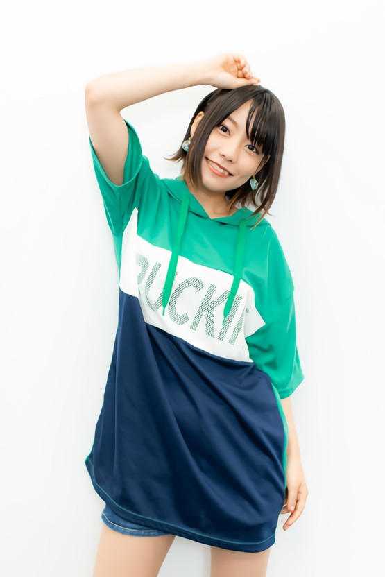
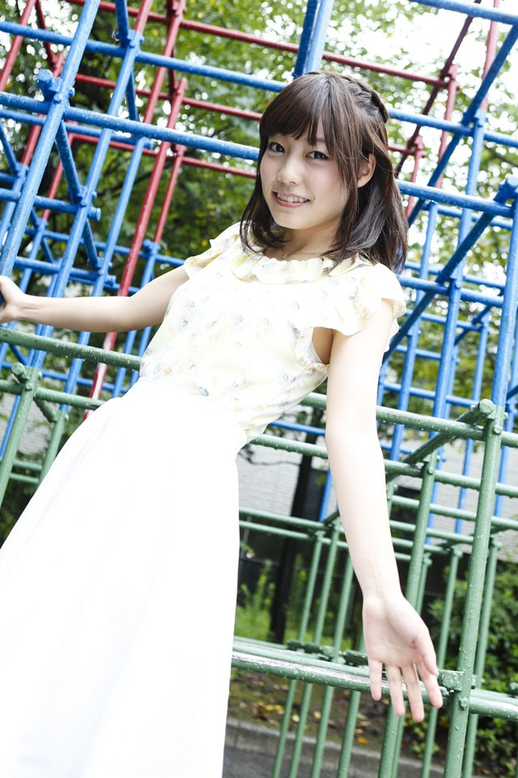

혼도 카에데 (本渡 楓)
미나세 이노리
토우아먀 나오
하야미 사오리
혼도 카에데
 
일본 내레이션 연기 연구소 나고야교 출신으로서 2015년 아임 엔터프라이즈에 소속되었다.
닷아이 라디오 4화에서 양성소에서 진급 심사를 봤다는 걸 봐서는 소속을 나고야에서 도쿄로 바꾼 상태에서 지금도 다니는 것으로 보인다.
2016년 4월 1일에 소속사인 아임 엔터프라이즈 홈페이지에 프로필이 추가되면서 본격적으로 아임 식구가 되었다.